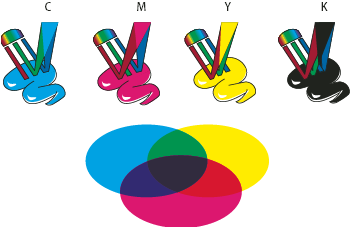

CMYK
Whereas the RGB model depends on a light source to create color, the CMYK model is based on the light-absorbing quality of ink printed on paper. As white light strikes translucent inks, a portion of the spectrum is absorbed. Color that is not absorbed is reflected back to your eye.
Combining pure cyan (C), magenta (M), and yellow (Y) pigments would result in black by absorbing, or subtracting, all colors. For this reason they are called subtractive colors. Black (K) ink is added for better shadow density. (The letter K came into use because black is the “key” color for registering other colors, and because the letter B also stands for blue.) Combining these inks to reproduce color is called four-color process printing.

- C.
- Cyan
- M.
- Magenta
- Y.
- Yellow
- K.
- Black
You can work with color values using the CMYK color mode, which is based on the CMYK color model. In CMYK mode, each of the CMYK process inks can use a value ranging from 0 to 100%. The lightest colors are assigned small percentages of process ink colors; darker colors have higher percentage values. For example, a bright red might contain 2% cyan, 93% magenta, 90% yellow, and 0% black. In CMYK objects, low ink percentages are closer to white, and high ink percentages are closer to black.
Use CMYK when preparing a document to be printed using process inks.